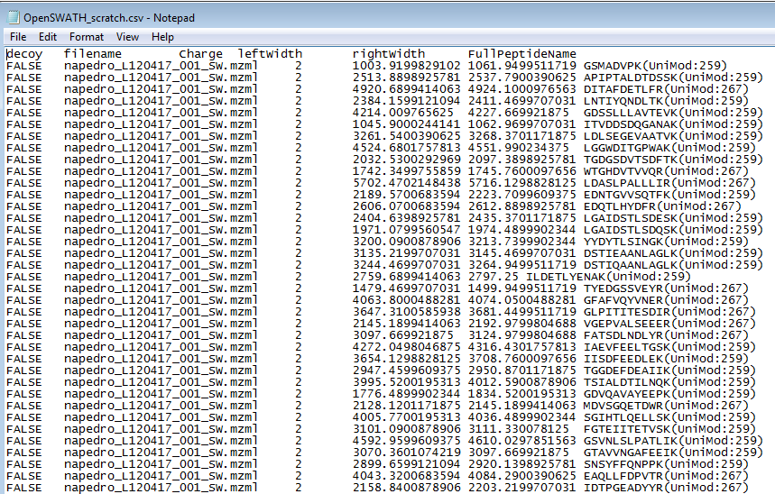
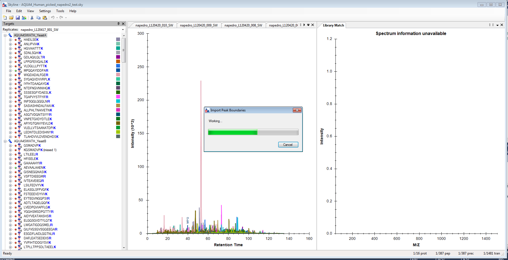

An important step in SRM data processing, and to an even greater extent for chromatograms extracted from data independent mass spectra (MS1 in DDA or MS/MS in DIA), is selecting the correct time range over which to integrate chromatogram peak areas for a desired peptide. In data independent methods especially, which can involve interrogating thousands or even tens of thousands of peptides per file, it is increasingly important to do this peak selection with tools that produce well calibrated probabilities, rather than relying on manual inspection to detect errors. Development of better tools for fully-automated peptide chromatogram peak assignment is an active area of current research1, 2. To assist in development, testing, and use of these tools, Skyline now supports the ability to import chromatogram peak boundaries (i.e. the start and end times used in peak area integration) determined by other tools (e.g. OpenSWATH or mProphet). This feature can be used to benchmark or visualize the performance of other tools, or simply to incorporate their results into a Skyline-based workflow.
To use the Import Peak Boundary feature in Skyline, you must first prepare a text file containing a list of the peak boundaries to be imported and the data file and peptide corresponding to each. The first line of the file should contain column names, which Skyline uses to figure out which column is which. The columns can be in any order as long as they are correctly named, and extraneous columns are not a problem (Skyline simply ignores them). The table below shows the columns Skyline expects to see, as well as what each column means and the allowed names for each column. Some columns are required, while others are optional.
| Column | Acceptable Names | Meaning | Optional or Required? |
| Starting Peak Time | MinStartTime / leftWidth | Time, in minutes or seconds, at which the start of the peak occurs. | Required |
| Ending Peak Time | MaxEndTime / rightWidth | Time, in minutes or seconds, at which the end of the peak occurs | Required |
| File Name | FileName/ filename | File corresponding to this peak group. The file must match the name of the file imported into Skyline. | Required |
| Peptide | ModifiedPeptideSequence / FullPeptideName | Modified sequence of the peptide. Can be in name, mass, or unimod notation (see below). | Required |
| Precursor Charge State | PrecursorCharge / Charge | For which precursor charge state should the peak boundaries be adjusted? If this column is not specified, all precursor charge states of the peptide are adjusted. | Optional |
| Decoy Status | PrecursorIsDecoy / IsDecoy | For documents where the same peptide occurs twice as a normal and decoy peptide. 0/False means decoy, 1/True means non-decoy. | Optional |
| Sample Identifier | SampleName | For specifying the sample, in the case where one Skyline “file” actually represents multiple injections and it is important to distinguish them. | Optional |
Notice that in the table above, each column can be called by multiple names, any of which Skyline will accept. This is to allow the results of many different tools (which give their output columns different names) to be easily imported. The following is a typical text file for importing, and is based on a text file output by the OpenSWATH tool:

This text file is tab-separated, but Skyline will also accept space, comma, or (if European language settings are enabled) semicolon as a separator. Peak Boundary times are specified in seconds here, but can also be specified in minutes (Skyline is able to detect which units were used). The columns can be in any order, and additional (extraneous) columns will be ignored. As noted above, peptide modified sequences can be expressed in many different ways, so GSMAFVPK(UniMod:259), GSMAFVPK[+8.0], and GSMAFVPK[Label (K) 6] are all acceptable.
Peak Boundary times of “#N/A” may also be entered; this will cause Skyline to remove peak information for that peptide.
To import a text file specifying peak integration, simply do the following in Skyline:
A progress bar should appear, and when it is done, the document’s peak boundaries will be adjusted to match those specified in the file:

At present, only peak boundaries exported from OpenSWATH or Skyline itself can be imported without any change to the file. Other tools currently require some re-formatting of the text file, although the Skyline team is working to make external import easier for all peak picking tools. If there is a peak picking tool you would like us to support, please contact the Skyline team.
1. Reiter, L. et al. mProphet: automated data processing and statistical validation for large-scale SRM experiments. Nat. Methods 8, 430–435 (2011).
2. Hannes L. Röst et al. OpenSWATH: A tool for the automated, targeted analysis of data-independent acquisition (DIA) MS-data. Nat. Biotechnol. doi:accepted